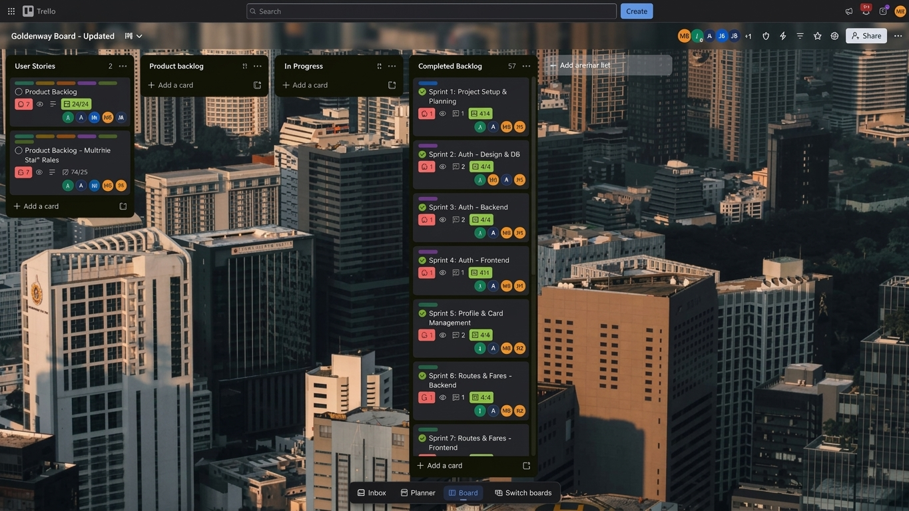
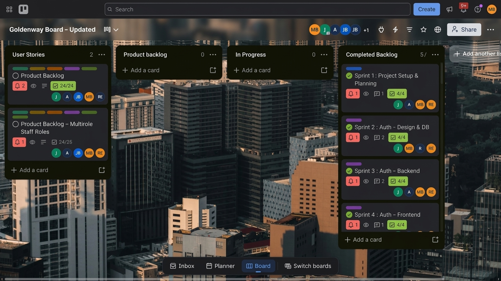

GoldenWay is a cashless Gold Card top-up app for Golden Arrow Bus Service commuters, built by Group 26 in short Agile sprints. These five sections show the artefacts our team produced and what I learned from each.
The project
The team is Adams, Barends, Barron, Borozi and Everts. We use React, Supabase, Stripe/PayFast, Vercel, GitHub and Figma, and manage work on a public Trello board. The solution architecture summary and brand guide sit alongside this evidence.
Agile Team Charter
Our charter is the shared agreement that kept five developers working in one codebase without getting in each other’s way.
Evidence
Purpose. Replace cash-only ticket booths with instant, cashless Gold Card top-ups for Golden Arrow commuters.
Agreement
How we applied it
Team
Adams, Barends, Barron, Borozi and Everts (Group 26)
Daily stand-ups
Each of us answers three questions: what I completed, what I plan to do next, and what is blocking me. We recorded these in our logbooks.
One shared toolset
React, Supabase, GitHub and Figma, with Trello for tasks and bugs
Branching strategy
Agreed in week 4 after merge conflicts started, so people stop overwriting each other
Reusable components
Repeated cards, buttons and inputs live in one shared component library
Friday walkthrough
The full team runs through the app and logs bugs on Trello before the next sprint
Brand consistency
All screens follow the GoldenWay brand guide: one palette, two typefaces, one set of components
Reflection
Our charter mattered most when things went wrong. In week 4, two teammates could not run the app because their Node versions differed, and merge conflicts appeared as soon as several of us edited the same files. Neither was a coding problem; both came from working agreements we had not written down. Agreeing on a branching strategy and a shared component library fixed them.
If I did it again, I would put technical working agreements in the charter on day one: a Node version, an environment-variable template and a branching rule. I would also revisit the charter at each retrospective, because a charter should be a living agreement.
User Stories and Tasks
We wrote stories from the commuter’s point of view, then split each into design, backend and frontend tasks on Trello.
Evidence

Sign up and log in
As a commuter, I want to create an account and log in securely, so that my balance and trips are tied to me.
Design the auth screens and database tables (Sprint 2)
Build register and login endpoints with password hashing (Sprint 3)
Connect screens to the API and protect private routes (Sprint 4)
Manage my profile and card
As a commuter, I want to update my details and manage my Gold Card, so that my information stays accurate.
Build profile and card management screens and logic (Sprint 5)
Browse routes and fares
As a commuter, I want to see routes and fares before I travel, so that I know what a trip will cost.
Build routes and fares API (Sprint 6)
Build routes and fares screens (Sprint 7)
Wallet and ride balance
As a commuter, I want to top up by card or EFT and see my ride balance, so that I never queue at a booth.
Build wallet and balance backend (Sprint 8)
Build wallet and balance screens (Sprint 9)
Multirole staff access
As a staff member, I want access based on my role, so that I only see the functions I need.
Track on the Trello card “Product Backlog – Multirole Staff Roles” (24 of 25 checklist items complete)
Our Trello “User Stories” list holds two cards with task checklists: the core backlog (24 of 24 items complete) and the multirole staff roles card (24 of 25). Open the board.
Reflection
Splitting every story into design, backend and frontend tasks is what made our sprints predictable. A story like “sign up and log in” is too large to finish in a day, but “build the login endpoint” is not. It also made it clear who was waiting on whom, because frontend work could not start until the endpoint existed.
My main lesson was that stories need to be small and testable. When one is vague, it creates rework. In week 9 we lost time fixing field names that did not match between the API and the frontend. Writing acceptance criteria into each story, including the data fields, would have prevented that.
Product Backlog
The product backlog lists everything GoldenWay needs, in the order we built it. Our Trello board shows 57 cards in the completed list.
Evidence
Delivered in
Backlog item
Status
Sprint 1
Project setup and planning
Done
Sprint 2
Authentication: design and database
Done
Sprint 3
Authentication: backend
Done
Sprint 4
Authentication: frontend
Done
Sprint 5
Profile and card management
Done
Sprint 6
Routes and fares: backend
Done
Sprint 7
Routes and fares: frontend
Done
Sprint 8
Wallet and ride balance: backend
Done
Sprint 9
Wallet and ride balance: frontend
Done
Staff
Multirole staff roles
24 of 25 checklist items
Future
Gold Card API integration for real-time balance sync
Ordering the backlog by dependency meant we built the foundations first: setup, then authentication, then the features that needed a logged-in user. Everything else, including profile, routes, fares and the wallet, depended on authentication, so it made sense to finish that first.
The backlog also showed me the value of saying no. Ideas like the GABS Gold Card API, a native app and offline top-ups are in our architecture, but we kept them as future items so they did not crowd out the core flow. Next time I would add an explicit priority to each item so those decisions are visible.
Sprint Backlog
Each sprint took one slice of the backlog and finished it before the next began. Every sprint card on our Trello board is complete.
Evidence
Sprint
Goal
Checklist
Status
1
Project setup and planning
4/4
Done
2
Authentication: design and database
4/4
Done
3
Authentication: backend
4/4
Done
4
Authentication: frontend
4/4
Done
5
Profile and card management
8/8
Done
6
Routes and fares: backend
4/4
Done
7
Routes and fares: frontend
4/4
Done
8
Wallet and ride balance: backend
4/4
Done
9
Wallet and ride balance: frontend
Complete
Done

Reflection
Our sprints worked because each had a single goal and a short checklist. Most had four tasks, and the profile sprint had eight because it covered more ground. Ticking items off kept the whole team aware of progress, and we only started a sprint once the one before it was done.
The Friday walkthrough was the best habit we had. At the end of each week we ran the whole app together and logged what we found, so bugs were caught while they were still cheap to fix. The challenge was balancing bug fixes against new work, which I noted in my logbook more than once. Next time I would reserve some sprint capacity for fixes.
Agile Logbook
My stand-up records for two weeks of the project: week 4, when we built the frontend shell, and week 9, when we built the backend and connected it.
Evidence
Week 4 (3 to 7 August 2026)
Date
Completed
Impediment
3 Aug
Set up the React project, repository, folder structure and routing.
Two teammates hit setup problems because of different Node versions.
4 Aug
Finished the app shell: shared layout and navigation.
Keeping styling consistent with the prototype without overcomplicating the CSS.
5 Aug
Built the landing and dashboard pages and matched them to the Figma designs.
Merge conflicts appearing as several people edit the same files.
6 Aug
Refactored repeated elements into a shared component library and agreed a branching strategy.
Deciding how much to build on mock data before the API structure is settled.
7 Aug
Connected screens to mock data, walked through the app with the team and logged bugs on Trello.
Balancing bug fixes against new development.
Week 9 (7 to 11 September 2026)
Date
Completed
Impediment
7 Sep
Finalised the data model and database schema for users, bookings and listings.
Waiting on agreement for how frontend and backend share data types.
8 Sep
Set up the backend and database; built login and registration endpoints with password hashing.
Environment variables and database credentials differ between machines.
9 Sep
Connected login and registration screens to the live API and added protected routes.
Handling expired tokens and errors cleanly.
10 Sep
Replaced dashboard mock data with live API data and added loading and error states.
API responses did not match what the frontend expected.
11 Sep
Added tests for authentication and the dashboard, fixed API mismatches, and ran a team walkthrough.
Balancing bug fixes against the new booking feature.
Comparing the two weeks shows how the project changed. In week 4 my blockers were about working together: Node versions, merge conflicts and styling. By week 9 they were about connecting systems: shared data types, environment variables and mismatched API fields. The logbook made that shift visible.
The three stand-up questions kept me honest. Writing down the impediment each day turned vague frustration into a specific problem the team could fix, such as the branching strategy we agreed on 6 August. Where the same impediment appeared on consecutive days, I treated it as a signal to act. In future I would log who owns each impediment so it does not sit unresolved.